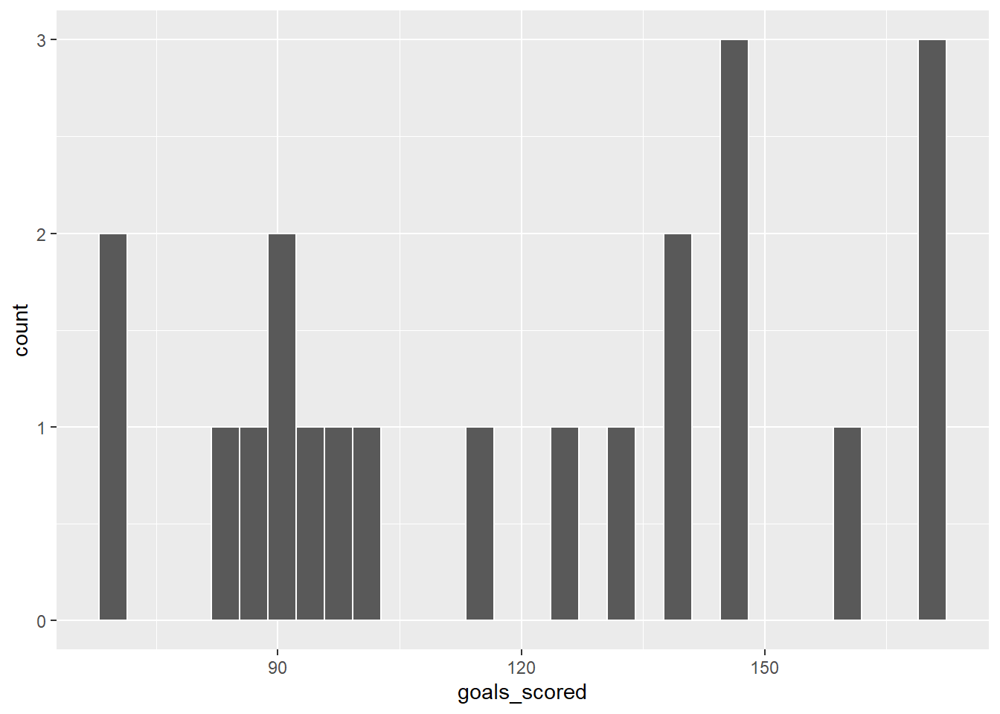
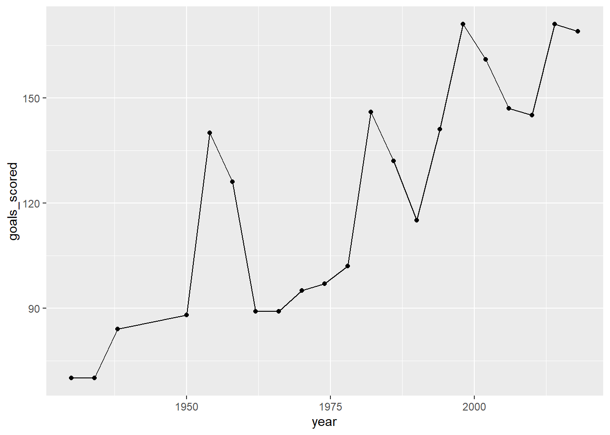
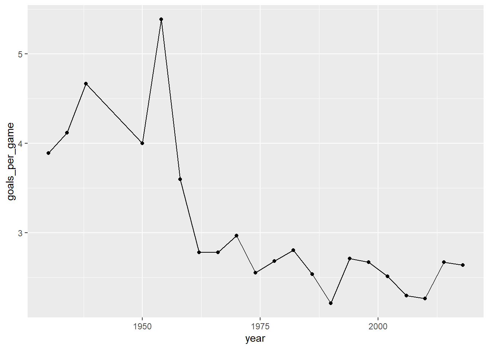

6 Wrangling
Exercise 1: select Practice
Use select() to create a simplified dataset that we’ll use throughout the exercises below.
- Store this dataset as
elections_small. - Only keep the following variables:
state_name,county_name,total_votes_20,repub_pct_20,dem_pct_20,total_votes_16,dem_pct_16
# Define elections_small
elections_small <- elections |>
select(state_name, county_name, total_votes_20, repub_pct_20, dem_pct_20, total_votes_16, dem_pct_16)
# Check out the first 6 rows to confirm your code did what you think it did!
head(elections_small) state_name county_name total_votes_20 repub_pct_20 dem_pct_20
1 Alabama Autauga County 27770 71.44 27.02
2 Alabama Baldwin County 109679 76.17 22.41
3 Alabama Barbour County 10518 53.45 45.79
4 Alabama Bibb County 9595 78.43 20.70
5 Alabama Blount County 27588 89.57 9.57
6 Alabama Bullock County 4613 24.84 74.70
total_votes_16 dem_pct_16
1 24661 23.96
2 94090 19.57
3 10390 46.66
4 8748 21.42
5 25384 8.47
6 4701 75.09Exercise 2: filter Demo
Whereas select() selects certain variables or columns, filter() keeps certain units of observation or rows relative to their outcome on certain variables. To this end, we must:
Identify the variable(s) that are relevant to the filter.
-
Use a “logical comparison operator” to define which values of the variable to keep:
symbol meaning ==equal to !=not equal to >greater than >=greater than or equal to <less than <=less than or equal to %in% c(???, ???)a list of multiple values Use quotes
""when specifying outcomes of interest for a categorical variable.
To comment/uncomment several lines of code at once, highlight them then click ctrl/cmd+shift+c.
state_name county_name total_votes_20 repub_pct_20 dem_pct_20
1 Hawaii Hawaii County 87814 30.63 66.88
2 Hawaii Honolulu County 382114 35.66 62.51
3 Hawaii Kauai County 33497 34.58 63.36
4 Hawaii Maui County 71044 31.14 66.59
total_votes_16 dem_pct_16
1 64865 63.61
2 285683 61.48
3 26335 62.49
4 51942 64.45 state_name county_name total_votes_20 repub_pct_20 dem_pct_20
1 Delaware Kent County 87025 47.12 51.19
2 Delaware New Castle County 287633 30.72 67.81
3 Delaware Sussex County 129352 55.07 43.82
4 Hawaii Hawaii County 87814 30.63 66.88
5 Hawaii Honolulu County 382114 35.66 62.51
6 Hawaii Kauai County 33497 34.58 63.36
7 Hawaii Maui County 71044 31.14 66.59
total_votes_16 dem_pct_16
1 74253 44.91
2 261468 62.30
3 105814 37.17
4 64865 63.61
5 285683 61.48
6 26335 62.49
7 51942 64.45# Keep only data on counties where the Republican got MORE THAN 93.97% of the vote in 2020
# THINK: What variable is relevant here?
elections_small |>
filter(repub_pct_20 > 93.97) state_name county_name total_votes_20 repub_pct_20 dem_pct_20
1 Texas Borden County 416 95.43 3.85
2 Texas King County 159 94.97 5.03
3 Texas Roberts County 550 96.18 3.09
total_votes_16 dem_pct_16
1 365 8.49
2 159 3.14
3 550 3.64# Keep only data on counties where the Republican got AT LEAST 93.97% of the vote in 2020
# This should have 1 more row (observation) than your answer above
elections_small |>
filter(repub_pct_20 >= 93.97) state_name county_name total_votes_20 repub_pct_20 dem_pct_20
1 Montana Garfield County 813 93.97 5.04
2 Texas Borden County 416 95.43 3.85
3 Texas King County 159 94.97 5.03
4 Texas Roberts County 550 96.18 3.09
total_votes_16 dem_pct_16
1 715 4.76
2 365 8.49
3 159 3.14
4 550 3.64We can also filter with respect to 2 rules! Here, think what variables are relevant.
# Keep only data on counties in Texas where the Democrat got more than 65% of the vote in 2020
# Do this 2 ways.
# Method 1: 2 filters with 1 condition each
elections_small |>
filter(repub_pct_20 > 65) |>
filter(state_name == "Texas") state_name county_name total_votes_20 repub_pct_20 dem_pct_20
1 Texas Anderson County 19227 78.59 20.57
2 Texas Andrews County 5863 84.31 14.50
3 Texas Angelina County 34574 72.53 26.44
4 Texas Aransas County 12290 75.17 23.73
5 Texas Archer County 4796 89.66 9.30
6 Texas Armstrong County 1112 93.08 6.74
7 Texas Atascosa County 18118 66.45 32.43
8 Texas Austin County 14554 78.65 20.28
9 Texas Bailey County 1860 77.10 21.99
10 Texas Bandera County 12715 79.10 19.70
11 Texas Baylor County 1702 87.78 10.75
12 Texas Blanco County 7441 73.15 25.68
13 Texas Borden County 416 95.43 3.85
14 Texas Bosque County 9126 81.84 17.10
15 Texas Bowie County 38261 70.87 28.09
16 Texas Briscoe County 725 88.14 10.76
17 Texas Brown County 15969 85.78 13.19
18 Texas Burleson County 8609 78.33 20.77
19 Texas Burnet County 24717 75.93 22.81
20 Texas Calhoun County 7856 71.80 27.34
21 Texas Callahan County 6832 88.00 10.74
22 Texas Camp County 5060 71.66 27.55
23 Texas Carson County 3122 89.01 9.51
24 Texas Cass County 13927 79.22 20.07
25 Texas Castro County 2083 76.91 22.37
26 Texas Chambers County 21652 80.15 18.46
27 Texas Cherokee County 19508 77.41 21.58
28 Texas Childress County 2279 85.26 13.60
29 Texas Clay County 5741 88.29 10.70
30 Texas Cochran County 1000 80.90 17.70
31 Texas Coke County 1779 89.15 10.01
32 Texas Coleman County 4124 88.29 10.94
33 Texas Collingsworth County 1218 86.04 12.73
34 Texas Colorado County 9975 74.91 24.26
35 Texas Comal County 88863 70.60 27.94
36 Texas Comanche County 6086 85.06 14.02
37 Texas Concho County 1268 83.44 15.54
38 Texas Cooke County 18988 82.14 16.91
39 Texas Coryell County 23490 65.72 32.21
40 Texas Cottle County 662 81.57 17.07
41 Texas Crane County 1503 82.97 16.03
42 Texas Crockett County 1574 77.51 21.86
43 Texas Crosby County 1953 71.48 26.98
44 Texas Dallam County 1609 86.33 12.24
45 Texas Dawson County 3789 77.88 21.32
46 Texas Deaf Smith County 4610 71.45 27.42
47 Texas Delta County 2592 83.41 15.55
48 Texas DeWitt County 8118 80.89 18.40
49 Texas Dickens County 988 86.34 13.16
50 Texas Donley County 1648 87.26 12.01
51 Texas Eastland County 8292 87.28 11.85
52 Texas Ector County 44581 73.34 25.50
53 Texas Edwards County 1066 83.77 15.76
54 Texas Ellis County 85493 66.34 32.24
55 Texas Erath County 16853 81.20 17.30
56 Texas Falls County 6133 68.11 30.96
57 Texas Fannin County 15004 81.12 17.70
58 Texas Fayette County 12941 78.60 20.56
59 Texas Fisher County 1826 79.30 19.28
60 Texas Floyd County 2039 77.69 21.48
61 Texas Foard County 551 80.76 17.97
62 Texas Franklin County 5009 83.07 16.05
63 Texas Freestone County 8711 80.25 18.77
64 Texas Gaines County 5995 89.32 9.61
65 Texas Garza County 1653 85.48 13.97
66 Texas Gillespie County 15846 78.97 20.04
67 Texas Glasscock County 653 93.57 5.97
68 Texas Goliad County 3988 77.36 21.99
69 Texas Gonzales County 7647 73.58 25.47
70 Texas Gray County 7782 87.90 10.65
71 Texas Grayson County 59439 74.30 24.40
72 Texas Gregg County 47982 67.72 30.84
73 Texas Grimes County 12413 75.98 22.82
74 Texas Hale County 9584 74.89 23.78
75 Texas Hall County 1168 85.19 14.38
76 Texas Hamilton County 4349 83.15 14.74
77 Texas Hansford County 2047 90.33 8.11
78 Texas Hardeman County 1580 84.18 15.25
79 Texas Hardin County 27635 86.33 12.57
80 Texas Harrison County 29710 72.25 26.62
81 Texas Hartley County 2078 89.89 9.38
82 Texas Haskell County 2214 83.11 15.94
83 Texas Hemphill County 1720 86.40 11.98
84 Texas Henderson County 36310 79.62 19.44
85 Texas Hill County 14931 79.87 19.15
86 Texas Hockley County 8095 80.74 18.31
87 Texas Hood County 32541 81.42 17.36
88 Texas Hopkins County 15939 79.80 19.11
89 Texas Houston County 9437 74.81 24.52
90 Texas Howard County 10240 78.65 20.21
91 Texas Hudspeth County 1165 66.87 31.85
92 Texas Hunt County 38574 75.60 23.09
93 Texas Hutchinson County 8771 87.57 11.00
94 Texas Irion County 889 85.38 13.50
95 Texas Jack County 3782 90.38 8.75
96 Texas Jackson County 6340 82.51 16.29
97 Texas Jasper County 15608 80.36 18.93
98 Texas Johnson County 72005 75.87 22.87
99 Texas Jones County 6741 83.96 14.82
100 Texas Karnes County 5249 75.60 23.51
101 Texas Kaufman County 56703 66.35 32.46
102 Texas Kendall County 26438 75.96 22.77
103 Texas Kenedy County 194 65.46 33.51
104 Texas Kent County 462 88.96 10.17
105 Texas Kerr County 27745 75.25 23.51
106 Texas Kimble County 2292 86.69 12.39
107 Texas King County 159 94.97 5.03
108 Texas Kinney County 1603 71.37 27.82
109 Texas Knox County 1456 81.04 18.20
110 Texas Lamar County 21418 78.25 20.81
111 Texas Lamb County 4408 79.88 19.06
112 Texas Lampasas County 10399 77.76 20.62
113 Texas Lavaca County 10197 86.34 13.07
114 Texas Lee County 8086 77.36 21.64
115 Texas Leon County 8674 86.73 12.36
116 Texas Liberty County 29334 79.44 19.72
117 Texas Limestone County 9095 74.65 24.33
118 Texas Lipscomb County 1353 89.06 9.68
119 Texas Live Oak County 5054 83.08 16.20
120 Texas Llano County 12660 79.61 19.47
121 Texas Loving County 66 90.91 6.06
122 Texas Lubbock County 120771 65.30 33.13
123 Texas Lynn County 2293 80.81 18.67
124 Texas McCulloch County 3436 84.52 14.26
125 Texas McMullen County 516 89.15 10.27
126 Texas Madison County 5297 78.70 20.54
127 Texas Marion County 4864 71.34 27.53
128 Texas Martin County 2160 85.97 13.33
129 Texas Mason County 2474 80.48 18.47
130 Texas Matagorda County 13726 71.73 27.20
131 Texas Medina County 22644 69.08 29.91
132 Texas Menard County 1028 80.06 19.16
133 Texas Midland County 58856 77.52 20.95
134 Texas Milam County 10576 75.49 23.60
135 Texas Mills County 2505 88.50 10.82
136 Texas Mitchell County 2579 84.14 15.39
137 Texas Montague County 9814 87.78 11.18
138 Texas Montgomery County 271451 71.24 27.40
139 Texas Moore County 5508 79.14 19.28
140 Texas Morris County 5587 69.30 29.87
141 Texas Motley County 652 92.64 7.06
142 Texas Navarro County 19121 72.17 26.68
143 Texas Newton County 6094 80.11 19.25
144 Texas Nolan County 5356 77.13 21.70
145 Texas Ochiltree County 3156 89.10 9.57
146 Texas Oldham County 1009 90.88 8.03
147 Texas Orange County 35994 81.09 17.66
148 Texas Palo Pinto County 12485 81.53 17.44
149 Texas Panola County 11451 81.44 17.96
150 Texas Parker County 76128 81.50 17.10
151 Texas Parmer County 2650 80.57 18.42
152 Texas Pecos County 4668 68.87 29.61
153 Texas Polk County 24181 76.81 22.28
154 Texas Potter County 33321 68.49 29.77
155 Texas Rains County 6053 85.16 13.91
156 Texas Randall County 64674 78.54 19.79
157 Texas Reagan County 1124 83.81 15.30
158 Texas Real County 1982 82.90 16.15
159 Texas Red River County 5806 77.80 21.46
160 Texas Refugio County 3366 65.66 32.92
161 Texas Roberts County 550 96.18 3.09
162 Texas Robertson County 8099 69.71 29.31
163 Texas Rockwall County 53891 68.15 30.45
164 Texas Runnels County 4409 86.35 12.52
165 Texas Rusk County 21368 77.38 21.66
166 Texas Sabine County 5487 87.19 12.19
167 Texas San Augustine County 4002 75.14 24.49
168 Texas San Jacinto County 12638 80.40 18.49
169 Texas San Saba County 2602 88.70 11.03
170 Texas Schleicher County 1159 81.10 18.21
171 Texas Scurry County 5869 84.90 13.94
172 Texas Shackelford County 1628 91.15 7.99
173 Texas Shelby County 10084 79.09 20.51
174 Texas Sherman County 991 89.40 9.18
175 Texas Smith County 100075 69.03 29.59
176 Texas Somervell County 4947 82.98 15.52
177 Texas Stephens County 3800 89.08 10.45
178 Texas Sterling County 639 91.39 7.98
179 Texas Stonewall County 736 83.56 15.76
180 Texas Sutton County 1557 78.48 20.68
181 Texas Swisher County 2355 78.34 20.30
182 Texas Taylor County 55112 71.76 26.47
183 Texas Terrell County 458 72.93 25.98
184 Texas Terry County 3612 77.85 20.96
185 Texas Throckmorton County 899 89.66 9.12
186 Texas Titus County 10539 71.83 27.10
187 Texas Tom Green County 45210 71.47 27.07
188 Texas Trinity County 6938 80.41 19.07
189 Texas Tyler County 9660 84.82 14.52
190 Texas Upshur County 18887 83.70 15.23
191 Texas Upton County 1368 86.11 12.43
192 Texas Van Zandt County 25994 85.67 13.53
193 Texas Victoria County 34188 68.32 30.36
194 Texas Walker County 23612 65.12 33.39
195 Texas Ward County 4060 79.83 18.82
196 Texas Washington County 17418 74.40 24.46
197 Texas Wharton County 16761 71.15 28.01
198 Texas Wheeler County 2337 92.38 7.19
199 Texas Wichita County 46030 69.67 28.59
200 Texas Wilbarger County 4524 77.90 21.13
201 Texas Wilson County 25013 73.81 25.39
202 Texas Winkler County 2126 82.46 16.84
203 Texas Wise County 32362 83.53 15.37
204 Texas Wood County 22779 83.63 15.40
205 Texas Yoakum County 2631 82.63 15.96
206 Texas Young County 8239 86.30 12.55
total_votes_16 dem_pct_16
1 16887 19.89
2 4926 16.97
3 29870 25.24
4 10467 23.48
5 4269 9.23
6 1017 6.88
7 13605 34.07
8 12255 18.92
9 1784 22.25
10 10213 16.90
11 1492 12.80
12 5669 21.94
13 365 8.49
14 7797 16.38
15 34470 25.62
16 734 12.40
17 13949 11.62
18 6945 21.47
19 19046 19.87
20 6957 30.44
21 5556 10.22
22 4542 27.74
23 2945 8.46
24 11606 19.39
25 1996 26.35
26 16661 17.64
27 16701 20.75
28 2084 12.14
29 5011 10.70
30 901 21.09
31 1423 9.84
32 3635 10.65
33 1154 12.56
34 8480 23.31
35 61567 23.01
36 5208 15.13
37 1067 13.87
38 15894 14.75
39 18127 27.90
40 583 14.41
41 1381 21.65
42 1395 26.67
43 1712 27.34
44 1535 14.46
45 3562 23.44
46 4201 28.21
47 2279 17.55
48 6822 17.02
49 909 14.08
50 1460 13.01
51 6935 11.19
52 36373 28.11
53 1065 28.36
54 63064 25.68
55 13810 15.63
56 5232 32.15
57 11972 17.73
58 11029 19.29
59 1722 23.40
60 1958 22.22
61 511 22.11
62 4356 15.27
63 7608 19.20
64 4609 12.95
65 1475 15.19
66 13123 17.42
67 602 5.65
68 3713 26.21
69 6304 24.86
70 7360 9.50
71 47068 21.83
72 41365 28.10
73 9528 23.03
74 8802 23.74
75 1089 15.06
76 3609 13.27
77 1947 8.78
78 1511 16.48
79 22768 12.21
80 26364 27.04
81 1945 8.84
82 1765 17.79
83 1687 10.73
84 29855 18.92
85 12906 19.64
86 7282 17.26
87 26120 15.32
88 13476 18.61
89 8302 23.83
90 8692 20.34
91 871 37.20
92 31185 20.21
93 8126 10.51
94 760 11.84
95 3339 9.40
96 5275 17.14
97 13351 19.34
98 57270 19.17
99 5932 15.76
100 4185 27.34
101 40979 25.05
102 19936 18.22
103 186 53.23
104 433 13.63
105 23090 20.20
106 1945 10.59
107 159 3.14
108 1424 32.09
109 1358 18.19
110 18537 19.31
111 3905 19.72
112 8149 18.15
113 8633 13.55
114 6522 21.04
115 7407 12.27
116 24155 20.08
117 7648 22.86
118 1322 10.21
119 4267 17.32
120 10377 17.59
121 64 6.25
122 98060 28.51
123 1997 20.18
124 3086 15.55
125 497 8.05
126 4283 20.57
127 4206 27.48
128 1755 15.16
129 2053 17.19
130 11779 28.50
131 17187 26.90
132 860 17.79
133 48753 20.50
134 8607 23.72
135 2238 10.81
136 2190 16.12
137 8604 10.29
138 203083 22.52
139 5262 20.83
140 4964 28.71
141 620 6.45
142 16382 24.40
143 4010 24.39
144 4744 21.69
145 2981 9.19
146 945 8.25
147 31761 18.00
148 10175 16.71
149 10413 17.62
150 56413 14.76
151 2818 30.09
152 4167 37.22
153 34444 20.68
154 28330 26.90
155 4630 13.37
156 53813 15.50
157 900 18.56
158 1678 15.61
159 5147 22.30
160 2945 35.11
161 550 3.64
162 7010 31.43
163 39529 24.37
164 3765 12.01
165 18994 20.72
166 4642 13.23
167 3563 25.46
168 10305 19.74
169 2354 12.45
170 1054 19.83
171 5261 13.93
172 1502 6.86
173 9072 19.37
174 933 10.29
175 83161 26.61
176 3876 13.93
177 3453 10.08
178 633 11.06
179 701 19.26
180 1415 22.12
181 2190 21.10
182 45266 22.20
183 437 32.04
184 1763 24.05
185 808 10.40
186 9176 27.66
187 38104 23.93
188 5982 19.29
189 7969 15.60
190 15918 14.94
191 1296 21.91
192 21689 12.87
193 31032 28.50
194 19683 30.92
195 3413 22.85
196 14747 22.93
197 14707 28.82
198 2306 8.41
199 37913 23.08
200 4101 19.68
201 19255 24.88
202 1873 22.42
203 24661 13.84
204 18646 14.07
205 2299 18.53
206 7658 11.40# Method 2: 1 filter with 2 conditions
elections_small |>
filter(state_name == "Texas", repub_pct_20 > 65) state_name county_name total_votes_20 repub_pct_20 dem_pct_20
1 Texas Anderson County 19227 78.59 20.57
2 Texas Andrews County 5863 84.31 14.50
3 Texas Angelina County 34574 72.53 26.44
4 Texas Aransas County 12290 75.17 23.73
5 Texas Archer County 4796 89.66 9.30
6 Texas Armstrong County 1112 93.08 6.74
7 Texas Atascosa County 18118 66.45 32.43
8 Texas Austin County 14554 78.65 20.28
9 Texas Bailey County 1860 77.10 21.99
10 Texas Bandera County 12715 79.10 19.70
11 Texas Baylor County 1702 87.78 10.75
12 Texas Blanco County 7441 73.15 25.68
13 Texas Borden County 416 95.43 3.85
14 Texas Bosque County 9126 81.84 17.10
15 Texas Bowie County 38261 70.87 28.09
16 Texas Briscoe County 725 88.14 10.76
17 Texas Brown County 15969 85.78 13.19
18 Texas Burleson County 8609 78.33 20.77
19 Texas Burnet County 24717 75.93 22.81
20 Texas Calhoun County 7856 71.80 27.34
21 Texas Callahan County 6832 88.00 10.74
22 Texas Camp County 5060 71.66 27.55
23 Texas Carson County 3122 89.01 9.51
24 Texas Cass County 13927 79.22 20.07
25 Texas Castro County 2083 76.91 22.37
26 Texas Chambers County 21652 80.15 18.46
27 Texas Cherokee County 19508 77.41 21.58
28 Texas Childress County 2279 85.26 13.60
29 Texas Clay County 5741 88.29 10.70
30 Texas Cochran County 1000 80.90 17.70
31 Texas Coke County 1779 89.15 10.01
32 Texas Coleman County 4124 88.29 10.94
33 Texas Collingsworth County 1218 86.04 12.73
34 Texas Colorado County 9975 74.91 24.26
35 Texas Comal County 88863 70.60 27.94
36 Texas Comanche County 6086 85.06 14.02
37 Texas Concho County 1268 83.44 15.54
38 Texas Cooke County 18988 82.14 16.91
39 Texas Coryell County 23490 65.72 32.21
40 Texas Cottle County 662 81.57 17.07
41 Texas Crane County 1503 82.97 16.03
42 Texas Crockett County 1574 77.51 21.86
43 Texas Crosby County 1953 71.48 26.98
44 Texas Dallam County 1609 86.33 12.24
45 Texas Dawson County 3789 77.88 21.32
46 Texas Deaf Smith County 4610 71.45 27.42
47 Texas Delta County 2592 83.41 15.55
48 Texas DeWitt County 8118 80.89 18.40
49 Texas Dickens County 988 86.34 13.16
50 Texas Donley County 1648 87.26 12.01
51 Texas Eastland County 8292 87.28 11.85
52 Texas Ector County 44581 73.34 25.50
53 Texas Edwards County 1066 83.77 15.76
54 Texas Ellis County 85493 66.34 32.24
55 Texas Erath County 16853 81.20 17.30
56 Texas Falls County 6133 68.11 30.96
57 Texas Fannin County 15004 81.12 17.70
58 Texas Fayette County 12941 78.60 20.56
59 Texas Fisher County 1826 79.30 19.28
60 Texas Floyd County 2039 77.69 21.48
61 Texas Foard County 551 80.76 17.97
62 Texas Franklin County 5009 83.07 16.05
63 Texas Freestone County 8711 80.25 18.77
64 Texas Gaines County 5995 89.32 9.61
65 Texas Garza County 1653 85.48 13.97
66 Texas Gillespie County 15846 78.97 20.04
67 Texas Glasscock County 653 93.57 5.97
68 Texas Goliad County 3988 77.36 21.99
69 Texas Gonzales County 7647 73.58 25.47
70 Texas Gray County 7782 87.90 10.65
71 Texas Grayson County 59439 74.30 24.40
72 Texas Gregg County 47982 67.72 30.84
73 Texas Grimes County 12413 75.98 22.82
74 Texas Hale County 9584 74.89 23.78
75 Texas Hall County 1168 85.19 14.38
76 Texas Hamilton County 4349 83.15 14.74
77 Texas Hansford County 2047 90.33 8.11
78 Texas Hardeman County 1580 84.18 15.25
79 Texas Hardin County 27635 86.33 12.57
80 Texas Harrison County 29710 72.25 26.62
81 Texas Hartley County 2078 89.89 9.38
82 Texas Haskell County 2214 83.11 15.94
83 Texas Hemphill County 1720 86.40 11.98
84 Texas Henderson County 36310 79.62 19.44
85 Texas Hill County 14931 79.87 19.15
86 Texas Hockley County 8095 80.74 18.31
87 Texas Hood County 32541 81.42 17.36
88 Texas Hopkins County 15939 79.80 19.11
89 Texas Houston County 9437 74.81 24.52
90 Texas Howard County 10240 78.65 20.21
91 Texas Hudspeth County 1165 66.87 31.85
92 Texas Hunt County 38574 75.60 23.09
93 Texas Hutchinson County 8771 87.57 11.00
94 Texas Irion County 889 85.38 13.50
95 Texas Jack County 3782 90.38 8.75
96 Texas Jackson County 6340 82.51 16.29
97 Texas Jasper County 15608 80.36 18.93
98 Texas Johnson County 72005 75.87 22.87
99 Texas Jones County 6741 83.96 14.82
100 Texas Karnes County 5249 75.60 23.51
101 Texas Kaufman County 56703 66.35 32.46
102 Texas Kendall County 26438 75.96 22.77
103 Texas Kenedy County 194 65.46 33.51
104 Texas Kent County 462 88.96 10.17
105 Texas Kerr County 27745 75.25 23.51
106 Texas Kimble County 2292 86.69 12.39
107 Texas King County 159 94.97 5.03
108 Texas Kinney County 1603 71.37 27.82
109 Texas Knox County 1456 81.04 18.20
110 Texas Lamar County 21418 78.25 20.81
111 Texas Lamb County 4408 79.88 19.06
112 Texas Lampasas County 10399 77.76 20.62
113 Texas Lavaca County 10197 86.34 13.07
114 Texas Lee County 8086 77.36 21.64
115 Texas Leon County 8674 86.73 12.36
116 Texas Liberty County 29334 79.44 19.72
117 Texas Limestone County 9095 74.65 24.33
118 Texas Lipscomb County 1353 89.06 9.68
119 Texas Live Oak County 5054 83.08 16.20
120 Texas Llano County 12660 79.61 19.47
121 Texas Loving County 66 90.91 6.06
122 Texas Lubbock County 120771 65.30 33.13
123 Texas Lynn County 2293 80.81 18.67
124 Texas McCulloch County 3436 84.52 14.26
125 Texas McMullen County 516 89.15 10.27
126 Texas Madison County 5297 78.70 20.54
127 Texas Marion County 4864 71.34 27.53
128 Texas Martin County 2160 85.97 13.33
129 Texas Mason County 2474 80.48 18.47
130 Texas Matagorda County 13726 71.73 27.20
131 Texas Medina County 22644 69.08 29.91
132 Texas Menard County 1028 80.06 19.16
133 Texas Midland County 58856 77.52 20.95
134 Texas Milam County 10576 75.49 23.60
135 Texas Mills County 2505 88.50 10.82
136 Texas Mitchell County 2579 84.14 15.39
137 Texas Montague County 9814 87.78 11.18
138 Texas Montgomery County 271451 71.24 27.40
139 Texas Moore County 5508 79.14 19.28
140 Texas Morris County 5587 69.30 29.87
141 Texas Motley County 652 92.64 7.06
142 Texas Navarro County 19121 72.17 26.68
143 Texas Newton County 6094 80.11 19.25
144 Texas Nolan County 5356 77.13 21.70
145 Texas Ochiltree County 3156 89.10 9.57
146 Texas Oldham County 1009 90.88 8.03
147 Texas Orange County 35994 81.09 17.66
148 Texas Palo Pinto County 12485 81.53 17.44
149 Texas Panola County 11451 81.44 17.96
150 Texas Parker County 76128 81.50 17.10
151 Texas Parmer County 2650 80.57 18.42
152 Texas Pecos County 4668 68.87 29.61
153 Texas Polk County 24181 76.81 22.28
154 Texas Potter County 33321 68.49 29.77
155 Texas Rains County 6053 85.16 13.91
156 Texas Randall County 64674 78.54 19.79
157 Texas Reagan County 1124 83.81 15.30
158 Texas Real County 1982 82.90 16.15
159 Texas Red River County 5806 77.80 21.46
160 Texas Refugio County 3366 65.66 32.92
161 Texas Roberts County 550 96.18 3.09
162 Texas Robertson County 8099 69.71 29.31
163 Texas Rockwall County 53891 68.15 30.45
164 Texas Runnels County 4409 86.35 12.52
165 Texas Rusk County 21368 77.38 21.66
166 Texas Sabine County 5487 87.19 12.19
167 Texas San Augustine County 4002 75.14 24.49
168 Texas San Jacinto County 12638 80.40 18.49
169 Texas San Saba County 2602 88.70 11.03
170 Texas Schleicher County 1159 81.10 18.21
171 Texas Scurry County 5869 84.90 13.94
172 Texas Shackelford County 1628 91.15 7.99
173 Texas Shelby County 10084 79.09 20.51
174 Texas Sherman County 991 89.40 9.18
175 Texas Smith County 100075 69.03 29.59
176 Texas Somervell County 4947 82.98 15.52
177 Texas Stephens County 3800 89.08 10.45
178 Texas Sterling County 639 91.39 7.98
179 Texas Stonewall County 736 83.56 15.76
180 Texas Sutton County 1557 78.48 20.68
181 Texas Swisher County 2355 78.34 20.30
182 Texas Taylor County 55112 71.76 26.47
183 Texas Terrell County 458 72.93 25.98
184 Texas Terry County 3612 77.85 20.96
185 Texas Throckmorton County 899 89.66 9.12
186 Texas Titus County 10539 71.83 27.10
187 Texas Tom Green County 45210 71.47 27.07
188 Texas Trinity County 6938 80.41 19.07
189 Texas Tyler County 9660 84.82 14.52
190 Texas Upshur County 18887 83.70 15.23
191 Texas Upton County 1368 86.11 12.43
192 Texas Van Zandt County 25994 85.67 13.53
193 Texas Victoria County 34188 68.32 30.36
194 Texas Walker County 23612 65.12 33.39
195 Texas Ward County 4060 79.83 18.82
196 Texas Washington County 17418 74.40 24.46
197 Texas Wharton County 16761 71.15 28.01
198 Texas Wheeler County 2337 92.38 7.19
199 Texas Wichita County 46030 69.67 28.59
200 Texas Wilbarger County 4524 77.90 21.13
201 Texas Wilson County 25013 73.81 25.39
202 Texas Winkler County 2126 82.46 16.84
203 Texas Wise County 32362 83.53 15.37
204 Texas Wood County 22779 83.63 15.40
205 Texas Yoakum County 2631 82.63 15.96
206 Texas Young County 8239 86.30 12.55
total_votes_16 dem_pct_16
1 16887 19.89
2 4926 16.97
3 29870 25.24
4 10467 23.48
5 4269 9.23
6 1017 6.88
7 13605 34.07
8 12255 18.92
9 1784 22.25
10 10213 16.90
11 1492 12.80
12 5669 21.94
13 365 8.49
14 7797 16.38
15 34470 25.62
16 734 12.40
17 13949 11.62
18 6945 21.47
19 19046 19.87
20 6957 30.44
21 5556 10.22
22 4542 27.74
23 2945 8.46
24 11606 19.39
25 1996 26.35
26 16661 17.64
27 16701 20.75
28 2084 12.14
29 5011 10.70
30 901 21.09
31 1423 9.84
32 3635 10.65
33 1154 12.56
34 8480 23.31
35 61567 23.01
36 5208 15.13
37 1067 13.87
38 15894 14.75
39 18127 27.90
40 583 14.41
41 1381 21.65
42 1395 26.67
43 1712 27.34
44 1535 14.46
45 3562 23.44
46 4201 28.21
47 2279 17.55
48 6822 17.02
49 909 14.08
50 1460 13.01
51 6935 11.19
52 36373 28.11
53 1065 28.36
54 63064 25.68
55 13810 15.63
56 5232 32.15
57 11972 17.73
58 11029 19.29
59 1722 23.40
60 1958 22.22
61 511 22.11
62 4356 15.27
63 7608 19.20
64 4609 12.95
65 1475 15.19
66 13123 17.42
67 602 5.65
68 3713 26.21
69 6304 24.86
70 7360 9.50
71 47068 21.83
72 41365 28.10
73 9528 23.03
74 8802 23.74
75 1089 15.06
76 3609 13.27
77 1947 8.78
78 1511 16.48
79 22768 12.21
80 26364 27.04
81 1945 8.84
82 1765 17.79
83 1687 10.73
84 29855 18.92
85 12906 19.64
86 7282 17.26
87 26120 15.32
88 13476 18.61
89 8302 23.83
90 8692 20.34
91 871 37.20
92 31185 20.21
93 8126 10.51
94 760 11.84
95 3339 9.40
96 5275 17.14
97 13351 19.34
98 57270 19.17
99 5932 15.76
100 4185 27.34
101 40979 25.05
102 19936 18.22
103 186 53.23
104 433 13.63
105 23090 20.20
106 1945 10.59
107 159 3.14
108 1424 32.09
109 1358 18.19
110 18537 19.31
111 3905 19.72
112 8149 18.15
113 8633 13.55
114 6522 21.04
115 7407 12.27
116 24155 20.08
117 7648 22.86
118 1322 10.21
119 4267 17.32
120 10377 17.59
121 64 6.25
122 98060 28.51
123 1997 20.18
124 3086 15.55
125 497 8.05
126 4283 20.57
127 4206 27.48
128 1755 15.16
129 2053 17.19
130 11779 28.50
131 17187 26.90
132 860 17.79
133 48753 20.50
134 8607 23.72
135 2238 10.81
136 2190 16.12
137 8604 10.29
138 203083 22.52
139 5262 20.83
140 4964 28.71
141 620 6.45
142 16382 24.40
143 4010 24.39
144 4744 21.69
145 2981 9.19
146 945 8.25
147 31761 18.00
148 10175 16.71
149 10413 17.62
150 56413 14.76
151 2818 30.09
152 4167 37.22
153 34444 20.68
154 28330 26.90
155 4630 13.37
156 53813 15.50
157 900 18.56
158 1678 15.61
159 5147 22.30
160 2945 35.11
161 550 3.64
162 7010 31.43
163 39529 24.37
164 3765 12.01
165 18994 20.72
166 4642 13.23
167 3563 25.46
168 10305 19.74
169 2354 12.45
170 1054 19.83
171 5261 13.93
172 1502 6.86
173 9072 19.37
174 933 10.29
175 83161 26.61
176 3876 13.93
177 3453 10.08
178 633 11.06
179 701 19.26
180 1415 22.12
181 2190 21.10
182 45266 22.20
183 437 32.04
184 1763 24.05
185 808 10.40
186 9176 27.66
187 38104 23.93
188 5982 19.29
189 7969 15.60
190 15918 14.94
191 1296 21.91
192 21689 12.87
193 31032 28.50
194 19683 30.92
195 3413 22.85
196 14747 22.93
197 14707 28.82
198 2306 8.41
199 37913 23.08
200 4101 19.68
201 19255 24.88
202 1873 22.42
203 24661 13.84
204 18646 14.07
205 2299 18.53
206 7658 11.40Exercise 3: arrange Demo
arrange() arranges or sorts the rows in a dataset according to a given column or variable, in ascending or descending order:
arrange(variable), arrange(desc(variable))
# Arrange the counties in elections_small from lowest to highest percentage of 2020 Republican support
# Print out just the first 6 rows
elections_small |>
arrange(repub_pct_20) |>
head(6) state_name county_name total_votes_20 repub_pct_20
1 District of Columbia District of Columbia 344356 5.40
2 Maryland Prince George's County 424855 8.73
3 Maryland Baltimore city 237461 10.69
4 Virginia Petersburg city 14118 11.22
5 New York New York County 694904 12.26
6 California San Francisco County 443458 12.72
dem_pct_20 total_votes_16 dem_pct_16
1 92.15 280272 92.85
2 89.26 351091 89.33
3 87.28 208980 85.44
4 87.75 13717 87.52
5 86.78 591368 87.17
6 85.27 365295 85.53# Arrange the counties in elections_small from highest to lowest percentage of 2020 Republican support
# Print out just the first 6 rows
elections_small |>
arrange(desc(repub_pct_20)) |>
head(6) state_name county_name total_votes_20 repub_pct_20 dem_pct_20
1 Texas Roberts County 550 96.18 3.09
2 Texas Borden County 416 95.43 3.85
3 Texas King County 159 94.97 5.03
4 Montana Garfield County 813 93.97 5.04
5 Texas Glasscock County 653 93.57 5.97
6 Nebraska Grant County 402 93.28 4.98
total_votes_16 dem_pct_16
1 550 3.64
2 365 8.49
3 159 3.14
4 715 4.76
5 602 5.65
6 394 5.08Exercise 4: mutate Demo
mutate() can either transform / mutate an existing variable (column), or define a new variable based on existing ones.
Part a
state_name county_name total_votes_20 repub_pct_20 dem_pct_20
1 Alabama Autauga County 27770 71.44 27.02
2 Alabama Baldwin County 109679 76.17 22.41
3 Alabama Barbour County 10518 53.45 45.79
4 Alabama Bibb County 9595 78.43 20.70
5 Alabama Blount County 27588 89.57 9.57
6 Alabama Bullock County 4613 24.84 74.70
total_votes_16 dem_pct_16 diff_20
1 24661 23.96 44.42
2 94090 19.57 53.76
3 10390 46.66 7.66
4 8748 21.42 57.73
5 25384 8.47 80.00
6 4701 75.09 -49.86# What did this code do?
elections_small |>
mutate(repub_votes_20 = round(total_votes_20 * repub_pct_20/100)) |>
head() state_name county_name total_votes_20 repub_pct_20 dem_pct_20
1 Alabama Autauga County 27770 71.44 27.02
2 Alabama Baldwin County 109679 76.17 22.41
3 Alabama Barbour County 10518 53.45 45.79
4 Alabama Bibb County 9595 78.43 20.70
5 Alabama Blount County 27588 89.57 9.57
6 Alabama Bullock County 4613 24.84 74.70
total_votes_16 dem_pct_16 repub_votes_20
1 24661 23.96 19839
2 94090 19.57 83542
3 10390 46.66 5622
4 8748 21.42 7525
5 25384 8.47 24711
6 4701 75.09 1146# What did this code do?
elections_small |>
mutate(repub_win_20 = repub_pct_20 > dem_pct_20) |>
head() state_name county_name total_votes_20 repub_pct_20 dem_pct_20
1 Alabama Autauga County 27770 71.44 27.02
2 Alabama Baldwin County 109679 76.17 22.41
3 Alabama Barbour County 10518 53.45 45.79
4 Alabama Bibb County 9595 78.43 20.70
5 Alabama Blount County 27588 89.57 9.57
6 Alabama Bullock County 4613 24.84 74.70
total_votes_16 dem_pct_16 repub_win_20
1 24661 23.96 TRUE
2 94090 19.57 TRUE
3 10390 46.66 TRUE
4 8748 21.42 TRUE
5 25384 8.47 TRUE
6 4701 75.09 FALSEPart b
# You try
# Define a variable that calculates the change in Dem support in 2020 vs 2016
elections_small |>
mutate(diff_20_16 = dem_pct_20 - dem_pct_16) |>
head() state_name county_name total_votes_20 repub_pct_20 dem_pct_20
1 Alabama Autauga County 27770 71.44 27.02
2 Alabama Baldwin County 109679 76.17 22.41
3 Alabama Barbour County 10518 53.45 45.79
4 Alabama Bibb County 9595 78.43 20.70
5 Alabama Blount County 27588 89.57 9.57
6 Alabama Bullock County 4613 24.84 74.70
total_votes_16 dem_pct_16 diff_20_16
1 24661 23.96 3.06
2 94090 19.57 2.84
3 10390 46.66 -0.87
4 8748 21.42 -0.72
5 25384 8.47 1.10
6 4701 75.09 -0.39# You try
# Define a variable that determines whether the Dem support was higher in 2020 than in 2016 (TRUE/FALSE)
elections_small |>
mutate(dem_win_20 = dem_pct_20 > dem_pct_16) |>
head() state_name county_name total_votes_20 repub_pct_20 dem_pct_20
1 Alabama Autauga County 27770 71.44 27.02
2 Alabama Baldwin County 109679 76.17 22.41
3 Alabama Barbour County 10518 53.45 45.79
4 Alabama Bibb County 9595 78.43 20.70
5 Alabama Blount County 27588 89.57 9.57
6 Alabama Bullock County 4613 24.84 74.70
total_votes_16 dem_pct_16 dem_win_20
1 24661 23.96 TRUE
2 94090 19.57 TRUE
3 10390 46.66 FALSE
4 8748 21.42 FALSE
5 25384 8.47 TRUE
6 4701 75.09 FALSEExercise 5: Pipe Series
Let’s now combine these verbs into a pipe series!
Part a
BEFORE running the below chunk, what do you think it will produce?
elections_small |>
filter(state_name == "Wisconsin",
repub_pct_20 < dem_pct_20) |>
arrange(desc(total_votes_20)) |>
head() state_name county_name total_votes_20 repub_pct_20 dem_pct_20
1 Wisconsin Milwaukee County 458971 29.27 69.13
2 Wisconsin Dane County 344791 22.85 75.46
3 Wisconsin Rock County 85360 43.51 54.66
4 Wisconsin La Crosse County 67884 42.25 55.75
5 Wisconsin Eau Claire County 58275 43.49 54.26
6 Wisconsin Portage County 40603 47.53 50.31
total_votes_16 dem_pct_16
1 434970 66.44
2 304729 71.38
3 75043 52.42
4 62785 51.61
5 54080 50.43
6 38123 48.59Part b
BEFORE trying, what do you think will happen if you change the order of filter and arrange:
- the results will be the same
- we’ll get an error
- we won’t get an error, but the results will be different
# Now try it. Change the order of filter and arrange below.
elections_small |>
arrange(desc(total_votes_20)) |>
filter(state_name == "Wisconsin",
repub_pct_20 < dem_pct_20) |>
head() state_name county_name total_votes_20 repub_pct_20 dem_pct_20
1 Wisconsin Milwaukee County 458971 29.27 69.13
2 Wisconsin Dane County 344791 22.85 75.46
3 Wisconsin Rock County 85360 43.51 54.66
4 Wisconsin La Crosse County 67884 42.25 55.75
5 Wisconsin Eau Claire County 58275 43.49 54.26
6 Wisconsin Portage County 40603 47.53 50.31
total_votes_16 dem_pct_16
1 434970 66.44
2 304729 71.38
3 75043 52.42
4 62785 51.61
5 54080 50.43
6 38123 48.59Part c
So the order of filter() and arrange() did not matter – rerranging them produces the same results. BUT what is one advantage of filtering before arranging?
Part d
BEFORE running the below chunk, what do you think it will produce?
elections_small |>
filter(state_name == "Delaware") |>
mutate(repub_win_20 = repub_pct_20 > dem_pct_20) |>
select(county_name, repub_pct_20, dem_pct_20, repub_win_20) county_name repub_pct_20 dem_pct_20 repub_win_20
1 Kent County 47.12 51.19 FALSE
2 New Castle County 30.72 67.81 FALSE
3 Sussex County 55.07 43.82 TRUEPart e
BEFORE trying, what do you think will happen if you change the order of mutate and select:
- the results will be the same
- we’ll get an error
- we won’t get an error, but the results will be different
We will get an error because we would be selecting a variable that does not yet exist.
Exercise 6: DIY Pipe Series
We’ve now learned 4 of the 6 wrangling verbs: select, filter, mutate, arrange. Let’s practice combining these into pipe series. Here are some hot tips:
- Before writing any code, translate the prompt: how many distinct wrangling steps are needed and what verb do we need in each step?
- Add each verb one at a time – don’t try writing a whole chunk at once.
Part a
Show just the counties in Minnesota and their Democratic 2020 vote percentage, from highest to lowest. Your answer should have just 2 columns.
elections_small |>
filter(state_name == "Minnesota", ) |>
arrange(desc(dem_pct_20)) |>
select(state_name,dem_pct_20) state_name dem_pct_20
1 Minnesota 71.50
2 Minnesota 70.46
3 Minnesota 65.58
4 Minnesota 56.64
5 Minnesota 55.73
6 Minnesota 54.16
7 Minnesota 53.46
8 Minnesota 50.84
9 Minnesota 50.74
10 Minnesota 50.64
11 Minnesota 50.31
12 Minnesota 49.58
13 Minnesota 49.07
14 Minnesota 48.76
15 Minnesota 48.26
16 Minnesota 47.79
17 Minnesota 47.24
18 Minnesota 46.37
19 Minnesota 46.00
20 Minnesota 45.52
21 Minnesota 42.42
22 Minnesota 41.23
23 Minnesota 40.96
24 Minnesota 40.80
25 Minnesota 40.61
26 Minnesota 38.41
27 Minnesota 38.20
28 Minnesota 38.12
29 Minnesota 37.80
30 Minnesota 37.58
31 Minnesota 37.48
32 Minnesota 37.47
33 Minnesota 36.12
34 Minnesota 35.98
35 Minnesota 35.94
36 Minnesota 35.79
37 Minnesota 35.78
38 Minnesota 35.58
39 Minnesota 35.46
40 Minnesota 35.41
41 Minnesota 35.29
42 Minnesota 35.27
43 Minnesota 34.88
44 Minnesota 34.68
45 Minnesota 34.49
46 Minnesota 34.42
47 Minnesota 34.35
48 Minnesota 34.17
49 Minnesota 34.15
50 Minnesota 33.96
51 Minnesota 33.87
52 Minnesota 33.73
53 Minnesota 33.67
54 Minnesota 33.65
55 Minnesota 33.65
56 Minnesota 33.47
57 Minnesota 32.85
58 Minnesota 32.70
59 Minnesota 32.56
60 Minnesota 32.48
61 Minnesota 32.48
62 Minnesota 31.98
63 Minnesota 31.47
64 Minnesota 30.71
65 Minnesota 30.64
66 Minnesota 30.54
67 Minnesota 30.08
68 Minnesota 30.03
69 Minnesota 30.02
70 Minnesota 30.02
71 Minnesota 29.99
72 Minnesota 29.98
73 Minnesota 29.91
74 Minnesota 29.69
75 Minnesota 29.60
76 Minnesota 29.45
77 Minnesota 28.60
78 Minnesota 28.58
79 Minnesota 28.43
80 Minnesota 27.87
81 Minnesota 26.76
82 Minnesota 26.44
83 Minnesota 26.35
84 Minnesota 25.98
85 Minnesota 25.33
86 Minnesota 24.79
87 Minnesota 22.33Part b
Create a new dataset named mn_wi that sorts the counties in Minnesota and Wisconsin from lowest to highest in terms of the change in Democratic vote percentage in 2020 vs 2016. This dataset should include the following variables (and only these variables): state_name, county_name, dem_pct_20, dem_pct_16, and a variable measuring the change in Democratic vote percentage in 2020 vs 2016.
# Define the dataset
mn_wi <- elections_small |>
filter(state_name%in%c("Wisconsin", "Minnesota")) |>
mutate(diff_dem_20 = dem_pct_20 -dem_pct_16) |>
arrange(diff_dem_20) |>
select(state_name, county_name, dem_pct_20, dem_pct_16, diff_dem_20)
head(mn_wi, 6) state_name county_name dem_pct_20 dem_pct_16 diff_dem_20
1 Minnesota Stevens County 37.80 39.55 -1.75
2 Wisconsin Forest County 34.06 35.12 -1.06
3 Wisconsin Kewaunee County 32.87 33.73 -0.86
4 Wisconsin Clark County 30.37 31.19 -0.82
5 Wisconsin Adams County 36.63 37.40 -0.77
6 Wisconsin Trempealeau County 40.86 41.57 -0.71Part c
Construct and discuss a plot of the county-level change in Democratic vote percent in 2020 vs 2016, and how this differs between Minnesota and Wisconsin.
Exercise 7: summarize Demo
6 verbs: select, filter, arrange, mutate, summarize, group_by
Let’s talk about the last 2 verbs. summarize() (or equivalently summarise()) takes an entire data frame as input and outputs a single row with one or more summary statistics. For each chunk below, indicate what the code does.
median(repub_pct_20)
1 68.29 median_repub
1 68.29Exercise 8: summarize + group_by demo
Finally, group_by() groups the units of observation or rows of a data frame by a specified set of variables. Alone, this function doesn’t change the appearance of our dataset or seem to do anything at all:
# A tibble: 3,109 × 7
# Groups: state_name [50]
state_name county_name total_votes_20 repub_pct_20 dem_pct_20 total_votes_16
<chr> <chr> <int> <dbl> <dbl> <int>
1 Alabama Autauga Cou… 27770 71.4 27.0 24661
2 Alabama Baldwin Cou… 109679 76.2 22.4 94090
3 Alabama Barbour Cou… 10518 53.4 45.8 10390
4 Alabama Bibb County 9595 78.4 20.7 8748
5 Alabama Blount Coun… 27588 89.6 9.57 25384
6 Alabama Bullock Cou… 4613 24.8 74.7 4701
7 Alabama Butler Coun… 9488 57.5 41.8 8685
8 Alabama Calhoun Cou… 50983 68.8 29.8 47376
9 Alabama Chambers Co… 15284 57.3 41.6 13778
10 Alabama Cherokee Co… 12301 86.0 13.2 10503
# ℹ 3,099 more rows
# ℹ 1 more variable: dem_pct_16 <dbl>Though it does change the underlying structure of the dataset:
[1] "data.frame"[1] "grouped_df" "tbl_df" "tbl" "data.frame"Where it really shines is in partnership with summarize().
# What does this do?
# (What if we didn't use group_by?)
elections_small |>
group_by(state_name) |>
summarize(median_repub = median(repub_pct_20), total_votes = sum(total_votes_20)) # A tibble: 50 × 3
state_name median_repub total_votes
<chr> <dbl> <int>
1 Alabama 70.6 2323304
2 Arizona 57.9 3387326
3 Arkansas 72.1 1219069
4 California 44.8 17495906
5 Colorado 56.2 3256953
6 Connecticut 41.0 1824280
7 Delaware 47.1 504010
8 District of Columbia 5.4 344356
9 Florida 64.6 11067456
10 Georgia 68 4997716
# ℹ 40 more rowsNotice that group_by() with summarize() produces new data frame or tibble! But the units of observation are now states instead of counties within states.
Exercise 9: DIY
Let’s practice (some of) our 6 verbs: select, filter, arrange, mutate, summarize, group_by Remember:
- Before writing any code, translate the given prompts: how many distinct wrangling steps are needed and what verb do we need in each step?
- Add each verb one at a time.
Part a
NOTE: Part a is a challenge exercise. If you get really stuck, move on to Part b which is the same overall question, but with hints.
# Sort the *states* from the most to least total votes cast in 2020
elections_small |>
group_by(state_name) |>
summarize(total = sum(total_votes_20)) |>
arrange(desc(total))# A tibble: 50 × 2
state_name total
<chr> <int>
1 California 17495906
2 Texas 11317911
3 Florida 11067456
4 New York 8616205
5 Pennsylvania 6925255
6 Illinois 6038850
7 Ohio 5922202
8 Michigan 5539302
9 North Carolina 5524801
10 Georgia 4997716
# ℹ 40 more rowsPart b
Exercise 10: Practice on New Data
Recall the World Cup football/soccer data from TidyTuesday:
You can find a codebook here. Use (some of) our 6 verbs (select, filter, arrange, mutate, summarize, group_by) and data viz to address the following prompts.
Exercise 11: Practice on Your Data
Return to the TidyTuesday data you’re using in Homework 3. Use your new wrangling skills to play around. What new insights can you gain?!
6.1 Solutions
Click for Solutions
6.1.1 Example 1
- select
- filter
- mutate
- arrange
- summarize
Exercise 1: select Practice
# Define elections_small
elections_small <- elections |>
select(state_name, county_name, total_votes_20, repub_pct_20, dem_pct_20, total_votes_16, dem_pct_16)
# Check out the first 6 rows to confirm your code did what you think it did!
head(elections_small) state_name county_name total_votes_20 repub_pct_20 dem_pct_20
1 Alabama Autauga County 27770 71.44 27.02
2 Alabama Baldwin County 109679 76.17 22.41
3 Alabama Barbour County 10518 53.45 45.79
4 Alabama Bibb County 9595 78.43 20.70
5 Alabama Blount County 27588 89.57 9.57
6 Alabama Bullock County 4613 24.84 74.70
total_votes_16 dem_pct_16
1 24661 23.96
2 94090 19.57
3 10390 46.66
4 8748 21.42
5 25384 8.47
6 4701 75.09Exercise 2: filter Demo
state_name county_name total_votes_20 repub_pct_20 dem_pct_20
1 Hawaii Hawaii County 87814 30.63 66.88
2 Hawaii Honolulu County 382114 35.66 62.51
3 Hawaii Kauai County 33497 34.58 63.36
4 Hawaii Maui County 71044 31.14 66.59
total_votes_16 dem_pct_16
1 64865 63.61
2 285683 61.48
3 26335 62.49
4 51942 64.45# Keep counties in Hawaii AND Delaware
elections_small |>
filter(state_name %in% c("Hawaii", "Delaware")) state_name county_name total_votes_20 repub_pct_20 dem_pct_20
1 Delaware Kent County 87025 47.12 51.19
2 Delaware New Castle County 287633 30.72 67.81
3 Delaware Sussex County 129352 55.07 43.82
4 Hawaii Hawaii County 87814 30.63 66.88
5 Hawaii Honolulu County 382114 35.66 62.51
6 Hawaii Kauai County 33497 34.58 63.36
7 Hawaii Maui County 71044 31.14 66.59
total_votes_16 dem_pct_16
1 74253 44.91
2 261468 62.30
3 105814 37.17
4 64865 63.61
5 285683 61.48
6 26335 62.49
7 51942 64.45# Keep only data on counties where the Republican got MORE THAN 93.97% of the vote in 2020
elections_small |>
filter(repub_pct_20 > 93.97) state_name county_name total_votes_20 repub_pct_20 dem_pct_20
1 Texas Borden County 416 95.43 3.85
2 Texas King County 159 94.97 5.03
3 Texas Roberts County 550 96.18 3.09
total_votes_16 dem_pct_16
1 365 8.49
2 159 3.14
3 550 3.64# Keep only data on counties where the Republican got AT LEAST 93.97% of the vote in 2020
# This should have 1 more row than your answer above
elections_small |>
filter(repub_pct_20 >= 93.97) state_name county_name total_votes_20 repub_pct_20 dem_pct_20
1 Montana Garfield County 813 93.97 5.04
2 Texas Borden County 416 95.43 3.85
3 Texas King County 159 94.97 5.03
4 Texas Roberts County 550 96.18 3.09
total_votes_16 dem_pct_16
1 715 4.76
2 365 8.49
3 159 3.14
4 550 3.64# Keep only data on counties in Texas where the Democrat got more than 65% of the vote in 2020
# Do this 2 ways.
# Method 1: 2 filters with 1 condition each
elections_small |>
filter(state_name == "Texas") |>
filter(dem_pct_20 > 65) state_name county_name total_votes_20 repub_pct_20 dem_pct_20
1 Texas El Paso County 267215 31.56 66.66
2 Texas Presidio County 2217 32.52 65.99
3 Texas Travis County 610349 26.43 71.41
4 Texas Zavala County 4379 34.03 65.40
total_votes_16 dem_pct_16
1 210458 69.14
2 2203 66.18
3 462511 66.26
4 3390 77.67# Method 2: 1 filter with 2 conditions
elections_small |>
filter(state_name == "Texas", dem_pct_20 > 65) state_name county_name total_votes_20 repub_pct_20 dem_pct_20
1 Texas El Paso County 267215 31.56 66.66
2 Texas Presidio County 2217 32.52 65.99
3 Texas Travis County 610349 26.43 71.41
4 Texas Zavala County 4379 34.03 65.40
total_votes_16 dem_pct_16
1 210458 69.14
2 2203 66.18
3 462511 66.26
4 3390 77.67Exercise 3: arrange Demo
# Arrange the counties in elections_small from lowest to highest percentage of 2020 Republican support
# Print out just the first 6 rows
elections_small |>
arrange(repub_pct_20) |>
head() state_name county_name total_votes_20 repub_pct_20
1 District of Columbia District of Columbia 344356 5.40
2 Maryland Prince George's County 424855 8.73
3 Maryland Baltimore city 237461 10.69
4 Virginia Petersburg city 14118 11.22
5 New York New York County 694904 12.26
6 California San Francisco County 443458 12.72
dem_pct_20 total_votes_16 dem_pct_16
1 92.15 280272 92.85
2 89.26 351091 89.33
3 87.28 208980 85.44
4 87.75 13717 87.52
5 86.78 591368 87.17
6 85.27 365295 85.53# Arrange the counties in elections_small from highest to lowest percentage of 2020 Republican support
# Print out just the first 6 rows
elections_small |>
arrange(desc(repub_pct_20)) |>
head() state_name county_name total_votes_20 repub_pct_20 dem_pct_20
1 Texas Roberts County 550 96.18 3.09
2 Texas Borden County 416 95.43 3.85
3 Texas King County 159 94.97 5.03
4 Montana Garfield County 813 93.97 5.04
5 Texas Glasscock County 653 93.57 5.97
6 Nebraska Grant County 402 93.28 4.98
total_votes_16 dem_pct_16
1 550 3.64
2 365 8.49
3 159 3.14
4 715 4.76
5 602 5.65
6 394 5.08Exercise 4: mutate Demo
# Define diff_20, the difference btwn the Repub and Dem percent in 2020
elections_small |>
mutate(diff_20 = repub_pct_20 - dem_pct_20) |>
head() state_name county_name total_votes_20 repub_pct_20 dem_pct_20
1 Alabama Autauga County 27770 71.44 27.02
2 Alabama Baldwin County 109679 76.17 22.41
3 Alabama Barbour County 10518 53.45 45.79
4 Alabama Bibb County 9595 78.43 20.70
5 Alabama Blount County 27588 89.57 9.57
6 Alabama Bullock County 4613 24.84 74.70
total_votes_16 dem_pct_16 diff_20
1 24661 23.96 44.42
2 94090 19.57 53.76
3 10390 46.66 7.66
4 8748 21.42 57.73
5 25384 8.47 80.00
6 4701 75.09 -49.86# Define repub_votes_20, the number (not percent) of Repub votes in 2020
elections_small |>
mutate(repub_votes_20 = round(total_votes_20 * repub_pct_20/100)) |>
head() state_name county_name total_votes_20 repub_pct_20 dem_pct_20
1 Alabama Autauga County 27770 71.44 27.02
2 Alabama Baldwin County 109679 76.17 22.41
3 Alabama Barbour County 10518 53.45 45.79
4 Alabama Bibb County 9595 78.43 20.70
5 Alabama Blount County 27588 89.57 9.57
6 Alabama Bullock County 4613 24.84 74.70
total_votes_16 dem_pct_16 repub_votes_20
1 24661 23.96 19839
2 94090 19.57 83542
3 10390 46.66 5622
4 8748 21.42 7525
5 25384 8.47 24711
6 4701 75.09 1146# Define repub_win_20, whether the Repub won in 2020 (TRUE or FALSE!)
elections_small |>
mutate(repub_win_20 = repub_pct_20 > dem_pct_20) |>
head() state_name county_name total_votes_20 repub_pct_20 dem_pct_20
1 Alabama Autauga County 27770 71.44 27.02
2 Alabama Baldwin County 109679 76.17 22.41
3 Alabama Barbour County 10518 53.45 45.79
4 Alabama Bibb County 9595 78.43 20.70
5 Alabama Blount County 27588 89.57 9.57
6 Alabama Bullock County 4613 24.84 74.70
total_votes_16 dem_pct_16 repub_win_20
1 24661 23.96 TRUE
2 94090 19.57 TRUE
3 10390 46.66 TRUE
4 8748 21.42 TRUE
5 25384 8.47 TRUE
6 4701 75.09 FALSEExercise 5: Pipe Series
Part c
It’s more “computationally efficient” to get rid of some rows before arranging.
Part e
We can’t select a variable before we define it!
Exercise 6: DIY Pipe Series
Part a
Here’s my translation:
- just the counties in Minnesota —> filter
- just the counties in Minnesota and their Democratic 2020 vote percentage —> select
- from highest to lowest —> arrange
# Remember to try this 1 line at a time
elections_small |>
filter(state_name == "Minnesota") |>
select(county_name, dem_pct_20) |>
arrange(desc(dem_pct_20)) county_name dem_pct_20
1 Ramsey County 71.50
2 Hennepin County 70.46
3 Cook County 65.58
4 St. Louis County 56.64
5 Dakota County 55.73
6 Olmsted County 54.16
7 Washington County 53.46
8 Blue Earth County 50.84
9 Clay County 50.74
10 Lake County 50.64
11 Nicollet County 50.31
12 Carlton County 49.58
13 Winona County 49.07
14 Rice County 48.76
15 Mahnomen County 48.26
16 Anoka County 47.79
17 Beltrami County 47.24
18 Carver County 46.37
19 Mower County 46.00
20 Scott County 45.52
21 Houston County 42.42
22 Goodhue County 41.23
23 Freeborn County 40.96
24 Norman County 40.80
25 Itasca County 40.61
26 Koochiching County 38.41
27 Watonwan County 38.20
28 Kittson County 38.12
29 Stevens County 37.80
30 Stearns County 37.58
31 Fillmore County 37.48
32 Steele County 37.47
33 Kandiyohi County 36.12
34 Aitkin County 35.98
35 Lyon County 35.94
36 Lac qui Parle County 35.79
37 Wabasha County 35.78
38 Grant County 35.58
39 Traverse County 35.46
40 Big Stone County 35.41
41 Pennington County 35.29
42 Pope County 35.27
43 Polk County 34.88
44 Cass County 34.68
45 Wright County 34.49
46 Hubbard County 34.42
47 Swift County 34.35
48 Crow Wing County 34.17
49 Chisago County 34.15
50 Becker County 33.96
51 Pine County 33.87
52 Le Sueur County 33.73
53 Chippewa County 33.67
54 Nobles County 33.65
55 Waseca County 33.65
56 Dodge County 33.47
57 Otter Tail County 32.85
58 Benton County 32.70
59 Douglas County 32.56
60 Brown County 32.48
61 Sherburne County 32.48
62 Faribault County 31.98
63 Red Lake County 31.47
64 Renville County 30.71
65 McLeod County 30.64
66 Yellow Medicine County 30.54
67 Lincoln County 30.08
68 Cottonwood County 30.03
69 Kanabec County 30.02
70 Martin County 30.02
71 Jackson County 29.99
72 Mille Lacs County 29.98
73 Wilkin County 29.91
74 Rock County 29.69
75 Murray County 29.60
76 Isanti County 29.45
77 Sibley County 28.60
78 Meeker County 28.58
79 Redwood County 28.43
80 Lake of the Woods County 27.87
81 Clearwater County 26.76
82 Pipestone County 26.44
83 Wadena County 26.35
84 Roseau County 25.98
85 Marshall County 25.33
86 Todd County 24.79
87 Morrison County 22.33Part b
Here’s my translation:
- counties in Minnesota and Wisconsin —> filter
- change in Democratic vote percentage in 2020 vs 2016 —> mutate (we don’t already have this)
- sorts the counties from highest to lowest —> arrange
- include the following variables (and only these variables) —> select
# Remember to try this 1 line at a time before storing!
mn_wi <- elections_small |>
filter(state_name %in% c("Minnesota", "Wisconsin")) |>
select(state_name, county_name, dem_pct_20, dem_pct_16) |>
mutate(dem_change = dem_pct_20 - dem_pct_16) |>
arrange(dem_change)
# Check it out
head(mn_wi) state_name county_name dem_pct_20 dem_pct_16 dem_change
1 Minnesota Stevens County 37.80 39.55 -1.75
2 Wisconsin Forest County 34.06 35.12 -1.06
3 Wisconsin Kewaunee County 32.87 33.73 -0.86
4 Wisconsin Clark County 30.37 31.19 -0.82
5 Wisconsin Adams County 36.63 37.40 -0.77
6 Wisconsin Trempealeau County 40.86 41.57 -0.71Part c
There was a stronger Dem shift from 2016 to 2020 in Minnesota. Further, in most counties across both states, the percent Dem tended to be higher in 2020 than in 2016.
Exercise 7: summarize Demo
# Calculate the median Repub vote percentage in 2020 across all counties
elections_small |>
summarize(median(repub_pct_20)) median(repub_pct_20)
1 68.29Exercise 8: summarize + group_by demo
# Calculate the median 2020 Repub percent and total votes BY STATE
elections_small |>
group_by(state_name) |>
summarize(median_repub = median(repub_pct_20), total_votes = sum(total_votes_20)) # A tibble: 50 × 3
state_name median_repub total_votes
<chr> <dbl> <int>
1 Alabama 70.6 2323304
2 Arizona 57.9 3387326
3 Arkansas 72.1 1219069
4 California 44.8 17495906
5 Colorado 56.2 3256953
6 Connecticut 41.0 1824280
7 Delaware 47.1 504010
8 District of Columbia 5.4 344356
9 Florida 64.6 11067456
10 Georgia 68 4997716
# ℹ 40 more rowsExercise 9: DIY
Part a
# Sort the states from the most to least total votes in 2020
elections_small |>
group_by(state_name) |>
summarize(total = sum(total_votes_20)) |>
arrange(desc(total))# A tibble: 50 × 2
state_name total
<chr> <int>
1 California 17495906
2 Texas 11317911
3 Florida 11067456
4 New York 8616205
5 Pennsylvania 6925255
6 Illinois 6038850
7 Ohio 5922202
8 Michigan 5539302
9 North Carolina 5524801
10 Georgia 4997716
# ℹ 40 more rows# In 2020, what were the total number of votes for the Democratic candidate and the total number of votes for the Republican candidate in each *state*?
elections_small |>
mutate(dem_votes_20 = round(total_votes_20 * dem_pct_20 / 100),
repub_votes_20 = round(total_votes_20 * repub_pct_20 / 100)) |>
group_by(state_name) |>
summarize(dem_total = sum(dem_votes_20),
repub_total = sum(repub_votes_20))# A tibble: 50 × 3
state_name dem_total repub_total
<chr> <dbl> <dbl>
1 Alabama 849664 1441155
2 Arizona 1672127 1661671
3 Arkansas 423919 760641
4 California 11109642 6006031
5 Colorado 1804393 1364627
6 Connecticut 1080677 715315
7 Delaware 296274 200601
8 District of Columbia 317324 18595
9 Florida 5297131 5668600
10 Georgia 2473661 2461869
# ℹ 40 more rows# What states did the Democratic candidate win in 2020?
elections_small |>
mutate(dem_votes_20 = round(total_votes_20 * dem_pct_20 / 100),
repub_votes_20 = round(total_votes_20 * repub_pct_20 / 100)) |>
group_by(state_name) |>
summarize(dem_total = sum(dem_votes_20),
repub_total = sum(repub_votes_20)) |>
filter(dem_total > repub_total)# A tibble: 26 × 3
state_name dem_total repub_total
<chr> <dbl> <dbl>
1 Arizona 1672127 1661671
2 California 11109642 6006031
3 Colorado 1804393 1364627
4 Connecticut 1080677 715315
5 Delaware 296274 200601
6 District of Columbia 317324 18595
7 Georgia 2473661 2461869
8 Hawaii 366121 196865
9 Illinois 3471916 2446931
10 Maine 430466 359897
# ℹ 16 more rowsExercise 10: Practice on New Data
year host winner second third fourth
1 1958 Sweden Brazil Sweden France West Germany
2 1962 Chile Brazil Czechoslovakia Chile Yugoslavia
3 1970 Mexico Brazil Italy West Germany Uruguay
4 1994 USA Brazil Italy Sweden Bulgaria
5 2002 Japan, South Korea Brazil Germany Turkey South Korea
goals_scored teams games attendance
1 126 16 35 868000
2 89 16 32 776000
3 95 16 32 1673975
4 141 24 52 3568567
5 161 32 64 2724604# What were the 6 World Cups with the highest attendance?
world_cup |>
arrange(desc(attendance)) |>
head() year host winner second third fourth
1 1994 USA Brazil Italy Sweden Bulgaria
2 2014 Brazil Germany Argentina Netherlands Brazil
3 2006 Germany Italy France Germany Portugal
4 2018 Russia France Croatia Belgium England
5 1998 France France Brazil Croatia Netherlands
6 2002 Japan, South Korea Brazil Germany Turkey South Korea
goals_scored teams games attendance
1 141 24 52 3568567
2 171 32 64 3441450
3 147 32 64 3367000
4 169 32 64 3031768
5 171 32 64 2859234
6 161 32 64 2724604# Construct a univariate plot of goals_scored (no wrangling necessary)
# This provides a visual summary of how the number of goals_scored varies from World Cup to World Cup
ggplot(world_cup, aes(x = goals_scored)) +
geom_histogram(color = "white")
# Let's follow up the plot with some more precise numerical summaries
# Calculate the min, median, and max number of goals_scored across all World Cups
# NOTE: Visually compare these numerical summaries to what you observed in the plot
world_cup |>
summarize(min(goals_scored), median(goals_scored), max(goals_scored)) min(goals_scored) median(goals_scored) max(goals_scored)
1 70 126 171# Construct a bivariate plot of how the number of goals_scored in the World Cup has changed over the years
# No wrangling necessary
ggplot(world_cup, aes(x = year, y = goals_scored)) +
geom_point() +
geom_line()
# Our above summaries might be a bit misleading.
# The number of games played at the World Cup varies.
# Construct a bivariate plot of how the typical number of goals per game has changed over the years
per_game_data <- world_cup |>
mutate(goals_per_game = goals_scored / games)
ggplot(per_game_data, aes(x = year, y = goals_per_game)) +
geom_point() +
geom_line()